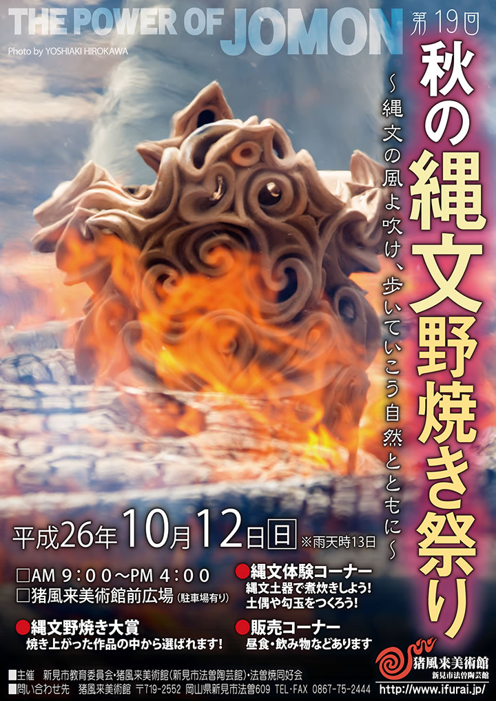
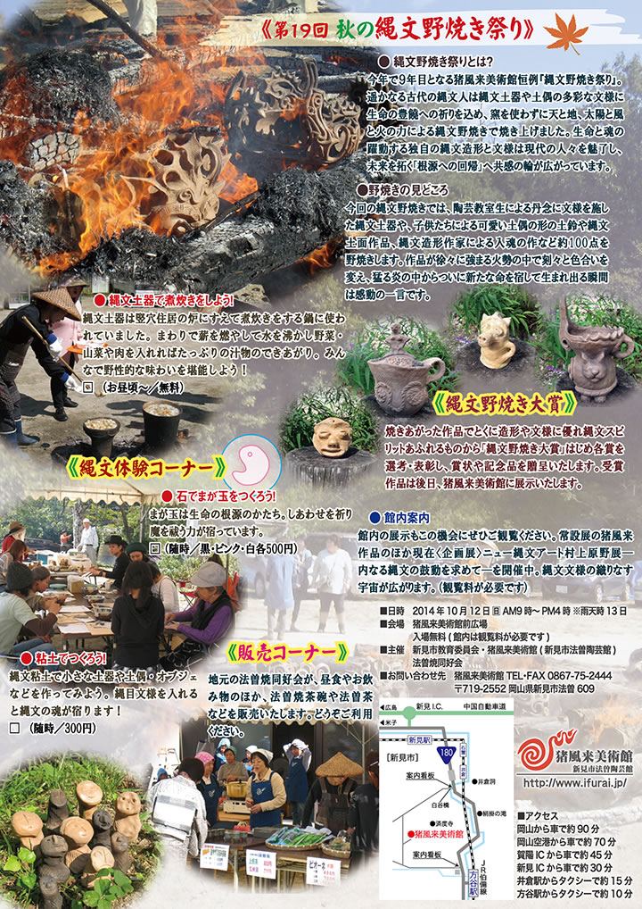

― お知らせ･活動予定 ―
-
■第１９回 秋の縄文野焼き祭り（平成２６年度）
【開催日】２０１４年１０月１２日（日）※雨天順延 -
■今年もどうぞ宜しくお願い致します
２０１４年元旦 -
■鎮魂と復興を祈念して「縄文いのりの土偶」をつくろう
―東日本大震災への祈り―
|  |
|  |
| 【第１７回「秋の縄文野焼き祭り」チラシ】 →（表面）PDF版を開く →（裏面）PDF版を開く |
● 縄文野焼き祭りとは？
今年で９年目となる猪風来美術館恒例『縄文野焼き祭り』。
遥かなる古代の縄文人は縄文土器や土偶の多彩な文様に生命の豊饒への祈りを込め、窯を使わずに天と地、
太陽と風と火の力による縄文野焼きで焼き上げました。
生命と魂の躍動する独自の縄文造形と文様は現代の人々を魅了し、未来を拓く「根源への回帰」へ共感の輪
が広がっています。
●野焼きの見どころ
今回の縄文野焼きでは、陶芸教室生による丹念に文様を施した縄文土器や、子供たちによる可愛い土偶の形
の土鈴や縄文土面作品、縄文造形作家による入魂の作など約100点を野焼きします。
作品が徐々に強まる火勢の中で刻々と色合いを変え、猛る炎の中からついに新たな命を宿して生まれ出る瞬間
は感動の一言です。
=∴=∵=∴=∵=∴=∵=∴=∵=∴=∵=∴=∵=∴=∵=∴=∵=∴=∵=∴=∵=∴=∵=∴=∵=∴=∵=∴=
《縄文野焼き大賞》
焼きあがった作品でとくに造形や文様に優れ縄文スピリットあふれるものから「縄文野焼き大賞」はじめ各賞
を選考・表彰し、賞状や記念品を贈呈いたします。
受賞作品は後日、猪風来美術館に展示いたします。
=∴=∵=∴=∵=∴=∵=∴=∵=∴=∵=∴=∵=∴=∵=∴=∵=∴=∵=∴=∵=∴=∵=∴=∵=∴=∵=∴=
《縄文体験コーナー》
● 縄文土器で煮炊きをしよう！
縄文土器は竪穴住居の炉にすえて煮炊きをする鍋に使われていました。
まわりで薪を燃やして水を沸かし野菜・山菜や肉を入れればたっぷりの汁物のできあがり。
みんなで野性的な味わいを堪能しよう！
□ （お昼頃～／無料）
● 粘土でつくろう！
縄文粘土で小さな土器や土偶・オブジェなどを作ってみよう。
縄目文様を入れると縄文の魂が宿ります！
□ （随時／300円）
● 石でまが玉をつくろう！
まが玉は生命の根源のかたち。
しあわせを祈り魔を祓う力が宿っています。
□ （随時／黒・ピンク・白各500円）
=∴=∵=∴=∵=∴=∵=∴=∵=∴=∵=∴=∵=∴=∵=∴=∵=∴=∵=∴=∵=∴=∵=∴=∵=∴=∵=∴=
《販売コーナー》
地元の法曽焼同好会が、昼食やお飲み物のほか、法曽焼茶碗や法曽茶などを販売いたします。
どうぞご利用ください。
=∴=∵=∴=∵=∴=∵=∴=∵=∴=∵=∴=∵=∴=∵=∴=∵=∴=∵=∴=∵=∴=∵=∴=∵=∴=∵=∴=
■日時 2014年10月12日 日 AM9時～PM4時 ※雨天時13日
■会場 猪風来美術館前広場
入場無料(館内は観覧料が必要です)
■主催 新見市教育委員会・猪風来美術館(新見市法曽陶芸館)
法曽焼同好会
■お問い合わせ先 猪風来美術館 TEL･FAX 0867-75-2444
〒719-2552 岡山県新見市法曽609

|
頌春
縄文の根源力～それは万物の豊饒を祈る共生の宇宙観。
混迷の今、縄文力の中にこそ希望や未来がかいま見える。
世界で、日本で、現代縄文芸術運動の大きなうねりを！
生命と魂の縄文スパイラルの爆発を！
今年もどうぞ宜しくお願い致します。

|
このたびの東日本大震災による被災に対しまして、心からのお見舞いと哀悼の意を表します。
被害地の惨状と深い悲しみの中で、再起を期して心を奮い立たせている被災者の皆様への応援の気持ちをこめて
「縄文いのりの土偶」をつくりませんか？
古来より縄文の土偶は、豊饒を願い災難をはらい、鎮魂と再生を祈願してつくられたものです。
猪風来美術館では開館以来、「にぎり地蔵」として願い思いをこめた小さな土偶を、陶芸体験の皆さんに
つくっていただいてきました。
野焼きしたお地蔵さまは、一部美術館と済渡寺をつなぐ参道の祠におかれ、「野辺の地蔵さまロード」として
みんなの思いをつなぐスポットになっています。
２０１０年４月１６日に開催された「春の縄文野焼き祭り」の縄文体験コーナー「にぎり地蔵をつくろう」では
『震災地への思いや気持ちをこめて「縄文いのりの土偶」をつくり、被災された方々へ思いをつなげよう』
との趣旨で呼びかけをさせていただきました。
その際、みなさまに多くのご理解とご賛同をいただきました。
復興はおそらく、これから長くかかることでしょう。
そのため「縄文いのりの土偶」づくりの活動もまた、継続していきたいと思っております。
どうぞ御協力よろしくお願いいたします。
※ 参加費300円は全額、復興義援金として寄付させていただきます。
※ 制作された「縄文いのりの土偶」のご寄付をお願いします。
※ 後日縄文野焼きされた「縄文いのりの土偶」の安置場所は検討させていただきます。